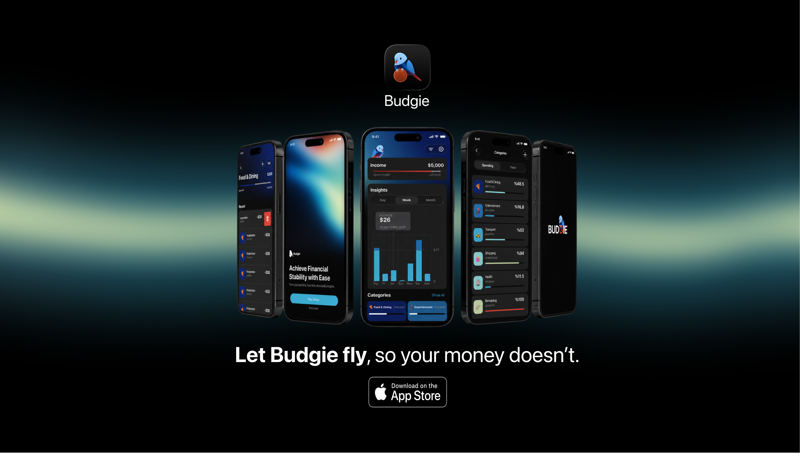
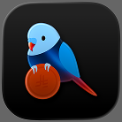
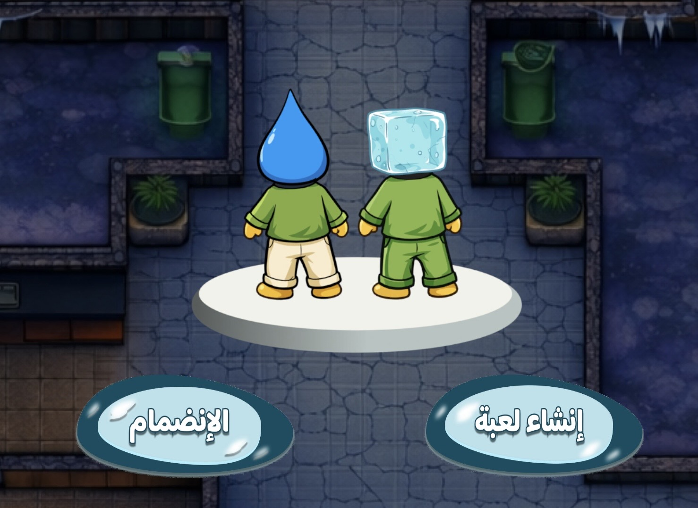
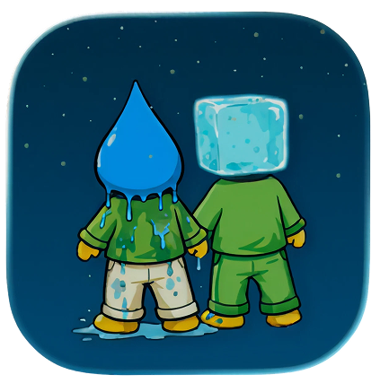
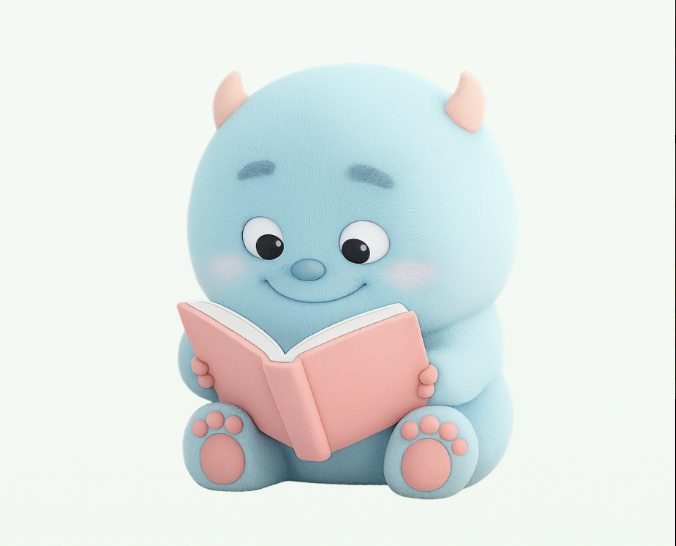
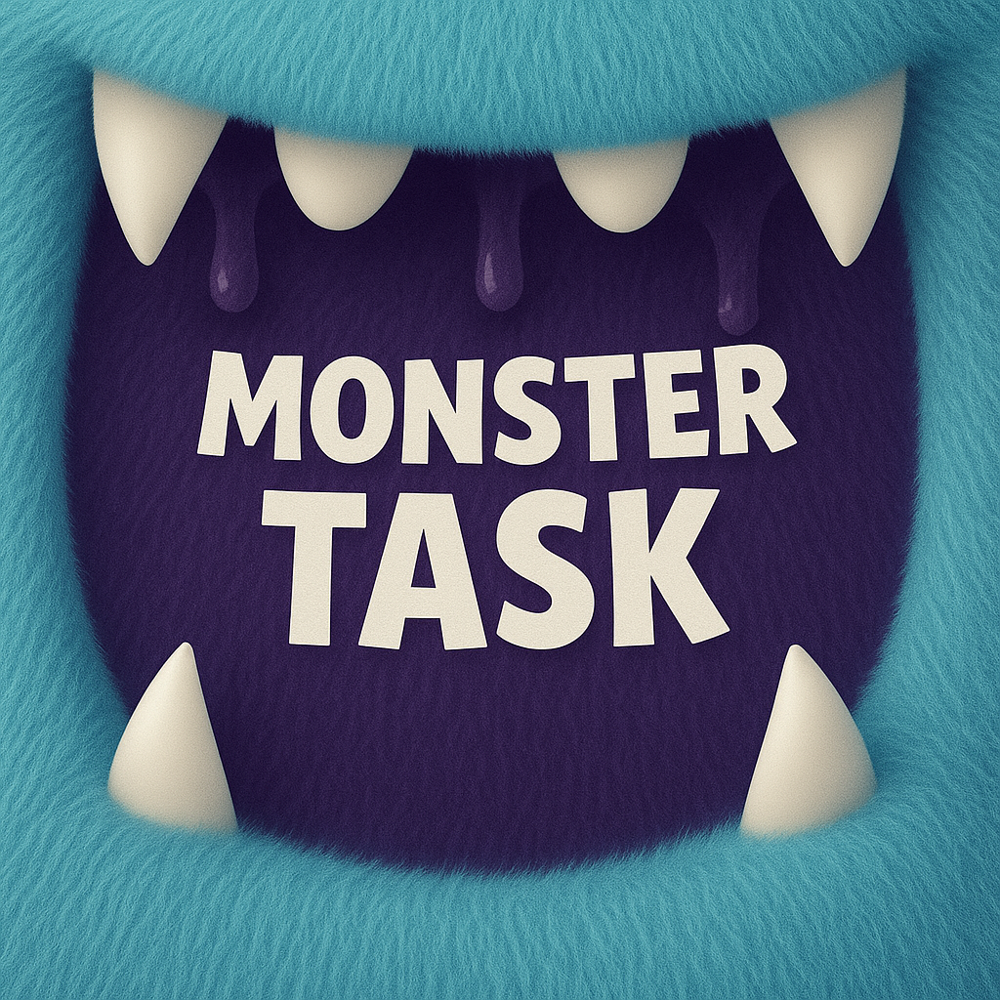
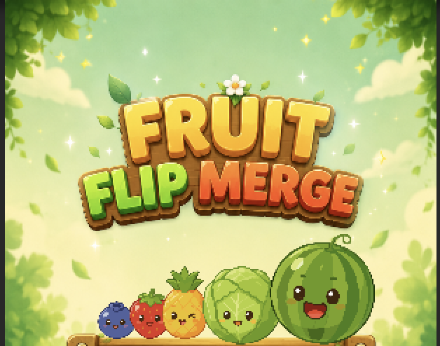

IT GRADUATE · IOS DEVELOPER · GAMEPLAY PROGRAMMER
I'm Wasan Althagafi, an Information Technology graduate specializing in Networks Administration and Security, passionate about building iOS applications and Unity games that deliver engaging user experiences.
FEATURED PROJECTS


IOS APP
Money tracking app that helps users manage budgets, automate payment tracking, and understand spending habits.
View Project →


UNITY GAME
Online multiplayer mobile game inspired by traditional Saudi games, built with Unity Netcode, Relay Services, and Lobby Services.
View Project →


IOS APP
A gamified task management app where users create tasks, assign priorities, and grow a stack of books as they complete more goals.
View Project →

UNITY GAME
A casual merge game developed with Unity, featuring a unique one-time Flip mechanic that allows players to reverse the positions of all fruits during gameplay.
View Project →
TECH STACK
ABOUT ME
Information Technology graduate from King Abdulaziz University with a specialization in Networks Administration and Security. I enjoy building mobile applications, multiplayer gameplay systems, and technology solutions that create meaningful user experiences.
CERTIFICATIONS
Swift App Development, UI/UX, and project-based learning.
Cybersecurity training program, February 2025.
Unity game development fundamentals and hands-on projects.
Cybersecurity fundamentals course.